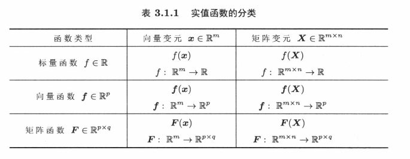

<!DOCTYPE html>


<html lang="zh-CN">


<head>
  <meta charset="utf-8" />
    
  <meta name="viewport" content="width=device-width, initial-scale=1, maximum-scale=1" />
  <title>
    矩阵微分与正规方程组推导 |  VincereZhou&#39;s blog
  </title>
  <meta name="generator" content="hexo-theme-ayer">
  
  <link rel="shortcut icon" href="/images/mojie.jpg" />
  
  
<link rel="stylesheet" href="/dist/main.css">

  <link rel="stylesheet" href="https://cdn.jsdelivr.net/gh/Shen-Yu/cdn/css/remixicon.min.css">
  
<link rel="stylesheet" href="/css/custom.css">

  
  <script src="https://cdn.jsdelivr.net/npm/pace-js@1.0.2/pace.min.js"></script>
  
  

  

<link rel="alternate" href="/atom.xml" title="VincereZhou's blog" type="application/atom+xml">
</head>

</html>

<body>
  <div id="app">
    
      
    <main class="content on">
      <section class="outer">
  <article
  id="post-矩阵微分与正规方程组推导"
  class="article article-type-post"
  itemscope
  itemprop="blogPost"
  data-scroll-reveal
>
  <div class="article-inner">
    
    <header class="article-header">
       
<h1 class="article-title sea-center" style="border-left:0" itemprop="name">
  矩阵微分与正规方程组推导
</h1>
 

    </header>
     
    <div class="article-meta">
      <a href="/posts/55264e6f/" class="article-date">
  <time datetime="2021-11-08T03:27:05.000Z" itemprop="datePublished">2021-11-08</time>
</a> 
  <div class="article-category">
    <a class="article-category-link" href="/categories/%E7%90%86%E8%AE%BA%E5%AD%A6%E4%B9%A0/">理论学习</a> / <a class="article-category-link" href="/categories/%E7%90%86%E8%AE%BA%E5%AD%A6%E4%B9%A0/%E7%BA%BF%E6%80%A7%E6%A8%A1%E5%9E%8B/">线性模型</a>
  </div>
  
<div class="word_count">
    <span class="post-time">
        <span class="post-meta-item-icon">
            <i class="ri-quill-pen-line"></i>
            <span class="post-meta-item-text"> 字数统计:</span>
            <span class="post-count">3.1k</span>
        </span>
    </span>

    <span class="post-time">
        &nbsp; | &nbsp;
        <span class="post-meta-item-icon">
            <i class="ri-book-open-line"></i>
            <span class="post-meta-item-text"> 阅读时长≈</span>
            <span class="post-count">10 分钟</span>
        </span>
    </span>
</div>
 
    </div>
      
    <div class="tocbot"></div>


  
    <div class="article-entry" itemprop="articleBody">
       
  <link rel="stylesheet" type="text/css" href="https://cdn.jsdelivr.net/hint.css/2.4.1/hint.min.css"><p>在看吴恩达老师CS229课程时，看吴老师推导线性回归的<strong>正规方程组</strong>（）时，感觉不是很系统，而且引入了一个新的概念，<strong>矩阵求导</strong>。这部分内容之前上育种课的时候就感觉云里雾里，这次花了些时间，把这一部分内容搞懂了。</p>
<span id="more"></span> 
<h1>问题描述</h1>
<p>线性回归可以用向量的形式描述为下式（向量表示为加粗的小写字母，默认为竖向量；矩阵表示为加粗的大写字母，下同）</p>
<p style=""></p><p>根据最小二乘法，代价函数定义为 （假设样本数为 ，参数数目为 , 使用向量外积转为向量乘法形式）:</p>
<p style=""></p><p>我们需要寻找使得代价函数（平方误差和或均方误差）最小的一组常数  ，这是一个优化问题（求一个函数的极值：极大值或极小值）。</p>
<p>在高中就学过，一个函数的极值往往是其导数为0的位置，因此我们需要求使得代价函数的导数为0（梯度为  向量）的  值，而这就牵涉到了矩阵微分或矩阵求导。（实际上，一阶导数为0的点仅仅是一个驻点或称平稳点，一阶导数为0仅仅是全局极小点的<strong>必要不充分</strong>条件。但是最小二乘的代价函数是一个凸函数，因此一阶导为0的点就是全局极小点，这些概念具体可见张贤达老师的《矩阵分析与应用》<sup id="fnref:1"><a href="#fn:1" rel="footnote"><span class="hint--top hint--error hint--medium hint--rounded hint--bounce" aria-label="张贤达《矩阵分析与应用（第二版）》">[1]</span></a></sup>。）</p>
<p>所以，这里需要先了解矩阵微分的一些概念和知识，这一部分内容同样见于张贤达老师的书<sup id="fnref:1"><a href="#fn:1" rel="footnote"><span class="hint--top hint--error hint--medium hint--rounded hint--bounce" aria-label="张贤达《矩阵分析与应用（第二版）》">[1]</span></a></sup>，知乎上也有人进行了一些梳理<sup id="fnref:2"><a href="#fn:2" rel="footnote"><span class="hint--top hint--error hint--medium hint--rounded hint--bounce" aria-label="https://zhuanlan.zhihu.com/p/305171795">[2]</span></a></sup>。</p>
<h1>矩阵微分</h1>
<h2 id="梯度矩阵定义">梯度矩阵定义</h2>
<p>首先，我们将线性代数中的函数依据其输入输出划分为下面这些类型，输入可以为向量或矩阵，输出可以分为标量、向量和矩阵（函数定义就是一个映射关系，线性代数里的函数仅仅是将输入输出换成了向量和矩阵，比如矩阵乘法  就是一个映射/函数）。</p>
<p></p>
<p>这里只考虑<strong>输入为一个向量的标量函数</strong>（ ）。</p>
<p>矩阵微分有两种定义方式，一种称为 Jacobian 矩阵，一种称为梯度矩阵，二者的内容均为<strong>偏导数</strong>，仅仅是结果的布局不同，互为转置矩阵。这里只说梯度矩阵，更详细的内容见张贤达老师的书。</p>
<p>实值标量函数  的梯度向量  为  列向量, 定义为 (输入为一个向量，输出为一个标量)</p>
<p style=""></p><h2 id="梯度矩阵性质">梯度矩阵性质</h2>
<h2 id="梯度矩阵计算">梯度矩阵计算</h2>
<p>那么我们如何计算一个梯度函数的梯度向量或梯度矩阵呢？你可以直接通过定义拆分成元素级别来计算，</p>
<p>例如求实值函数  的梯度矩阵。由于 , 故可求出梯度向量  的第  个分量为：</p>
<p style=""></p><p>立即得梯度向量 </p>
<p>但是这样做很麻烦，而已有的函数可能不好拆解成元素级别的式子，也不符合线性代数一向简洁的特点。</p>
<p>我们可以通过一个<strong>矩阵微分</strong>的性质来求解梯度矩阵，下面就简单介绍一下<sup id="fnref:1"><a href="#fn:1" rel="footnote"><span class="hint--top hint--error hint--medium hint--rounded hint--bounce" aria-label="张贤达《矩阵分析与应用（第二版）》">[1]</span></a></sup>。在介绍矩阵微分之前，需要掌握一些<strong>矩阵的迹</strong>的性质</p>
<h3 id="矩阵的迹">矩阵的迹</h3>
<p><strong>定义</strong> $ n \times n$ 矩阵  的对角元素之和称为  的迹 (trace), 记作 , 即有</p>
<p style=""></p><p><strong>非正方矩阵无迹的定义</strong>。</p>
<p>下面是矩阵的迹满足的一些性质。</p>
<p>(1) 若  和  均为  矩阵, 则  。<br>
(2) 若  和  均为  矩阵, 并且  和  为常数, 则   。特别地, 若 , 则  。<br>
(3) 矩阵  的转置、复数共轭和复共轭转置的迹分别为   和 <br>
(4) 若 , 则  。</p>
<p>证明，运用矩阵乘法，存在下式</p>
<p style=""></p><p style=""></p><p>观察一下，得知二者相等，得证  。</p>
<p>(5) 若  是一个  矩阵, 则  零矩阵  。</p>
<p>证明</p>
<p style=""></p><p>因此，<br>
(6)  和 。</p>
<p>证明：这里只证明前半部分，后半部分我直接脑补出来了。</p>
<p style=""></p><p>设</p>
<p style=""></p><p style=""></p><p>(7) 迹等于特征值之和, 即  。<br>
(8) 分块矩阵的迹满足</p>
<p style=""></p><p>式中,  。<br>
(9) 对于任何正整数 , 有</p>
<p style=""></p><p>灵活运用迹的等式 , 可以得到一些常用的重要结果。例如, 矩阵  和  的迹相等, 且有</p>
<p style=""></p><p>又如, 在迹的等式  中, 若分别令  和 , , 则有</p>
<p style=""></p><p>类似地, 若分别令  及 , 又有</p>
<p style=""></p><p>利用上式还易知, 若矩阵  与  均为  矩阵, 且  非奇异, 则</p>
<p style=""></p><h3 id="一阶矩阵微分">一阶矩阵微分</h3>
<h3 id="一阶实矩阵微分">一阶实矩阵微分</h3>
<p>矩阵微分用符号  表示, 定义为  。<br>
例 考虑标量函数  的微分, 得</p>
<p style=""></p><p>即有  。<br>
例 考虑矩阵乘积  的微分矩阵, 有</p>
<p style=""></p><p>从而得  。<br>
以上举例表明, 实矩阵微分具有以下两个基本性质:<br>
<strong>转置</strong> 矩阵转置的微分等于矩阵微分的转置, 即有  。<br>
<strong>线性</strong>  。<br>
下面汇总了矩阵微分的常用计算公式  。<br>
(1) 常数矩阵的微分矩阵为零矩阵, 即  。<br>
(2) 常数  与矩阵  的乘积的微分矩阵  。<br>
(3) 矩阵转置的微分矩阵等于原矩阵的微分矩阵的转置, 即  。<br>
(4) 两个矩阵函数的和 (差) 的微分矩阵为  。<br>
(5) 常数矩阵与矩阵乘积的微分矩阵为  。<br>
(6) 矩阵函数  乘积的微分矩阵为</p>
<p style=""></p><p>(7) 矩阵  的迹的矩阵微分  等于矩阵微分  的迹 , 即</p>
<p style=""></p><p>特别地, 矩阵函数  的迹的矩阵微分为  。</p>
<h3 id="标量函数的梯度矩阵辨识">标量函数的梯度矩阵辨识</h3>
<p>在多变量函数的微积分中, 称多变量函数  在点  可微分, 若  的全改变量可以写作</p>
<p style=""></p><p>式中,  分别与  无关, 而  表示偏改变量 ,  的二阶及高阶项。这时，函数  的偏导数  一定存在,</p>
<p>并且</p>
<p style=""></p><p>全改变量  的线性主部</p>
<p style=""></p><p>称为多变量函数  的全微分, 记为</p>
<p style=""></p><p><strong>多变量函数  在点  可微分的充分条件是: 偏导数 ,  均存在, 并且连续。</strong><br>
一阶实矩阵微分为、 矩阵的辨识提供了一种有效的方法。</p>
<h4 id="标量函数-f-boldsymbol-x-的梯度矩阵辩识">标量函数  的梯度矩阵辩识</h4>
<p>考虑标量函数 , 其变元向量  。将变元向量的元素  视为  个变量, 利用式 (3.2.14), 可以直接引出以向量为变元的标量函数  的全微分表达式</p>
<p style=""></p><p>或简记为</p>
<p style=""></p><p>式中</p>
<p style=""></p><p>式 (3.2.16) 称为微分法则的向量形式, 它启示了一个重要的应用: 若令 , 则一阶微分可以写作迹函数形式 (第二个等号应用标量的迹等于本身)</p>
<p style=""></p><p>这表明, 标量函数  的梯度矩阵与微分矩阵之间存在等价关系</p>
<p style=""></p><p>换言之, 若函数  的微分可以写作 , 则矩阵  就是函数  关于 其变元向量  的 梯度矩阵的转置。</p>
<p>因此，我们得到了一个计算梯度矩阵的有效方法:</p>
<p>(1) 求实值函数  相对于变元矩阵  的矩阵微分 , 并将其表示成规范形式 ;<br>
(2) 实值函数  相对于  变元矩阵  的梯度矩阵等于  。</p>
<p>此时，考察二次型函数 , 其中,  是一个正方的常数矩阵。首先将标量函数写成迹函数形式, 然后利用矩阵乘积的微分易得</p>
<p style=""></p><p>直接得二次型函数  关于变元向量  的梯度向量为</p>
<p style=""></p><p>显然, 若  为对称矩阵, 则  。</p>
<h4 id="矩阵的标量函数：迹">矩阵的标量函数：迹</h4>
<p>根据<strong>迹</strong>的性质，我们可以得到：</p>
<p>(1) 标量函数  总可以写成迹函数的形式, 因为 ;<br>
(2) 无论  出现在迹函数内的任何位置, 总可以通过迹函数的性质  , 将  写到迹函数变量的最右端, 从而得到迹函数微分矩阵的规范形式。<br>
(3) 对于 , 总可以通过迹函数的性质  , 写成迹函数微分矩阵的规范形式。</p>
<h1>推导正规方程组</h1>
<p>回到我们的问题，这里我们将最小二乘法的损失函数展开，得到</p>
<p style=""></p><p>注意到， 二者互为转置，并且二者均为标量，因此二者相等。损失函数写为</p>
<p style=""></p><p>求  相对于  的导数, 并令其结果等于零</p>
<p>求梯度向量的过程需要用到上面提到的矩阵微分的性质。</p>
<p style=""></p><p>证明过程如下（这里我们先求解两个子式的微分，注意到这两个子式也是标量，最后一个子式  不是关于  的式子，因此其微分矩阵为  矩阵）</p>
<p style=""></p><p style=""></p><p style=""></p><p style=""></p><p>也就是说, 解  必然满足</p>
<p style=""></p><p>这就是线性回归的<strong>正规方程组</strong>。</p>
<p>如果  非奇异,  该方程有唯一的解</p>
<p style=""></p><h1>最小二乘估计值的性质</h1>
<p>这一部分内容来自于《linear models in statistics》<sup id="fnref:3"><a href="#fn:3" rel="footnote"><span class="hint--top hint--error hint--medium hint--rounded hint--bounce" aria-label="《linear models in statistics》
">[3]</span></a></sup></p>
<p>如果  ，那么最小二乘估计值  是  的无偏估计值。</p>
<p>证明：</p>
<p style=""></p><p>如果  ，那么最小二乘估计值  的协方差矩阵为  。</p>
<p>证明：</p>
<p style=""></p><p><strong>定理</strong>：<strong>(Gauss – Markov Theorem)</strong>，如果同时满足    ，  ，那么最小二乘估计值   ,  在所有的线性无偏估计值中具有<strong>最小的方差</strong>。</p>
<p>证明：</p>
<p>注意这里的“线性”指的是  是关于   的线性变换。假设我们有一个  的无偏线性估计值为   ，我们想要找到一个矩阵   使得    的方差最小。</p>
<p>因为   无偏，我们有  。根据假设  ，我们可以将其写为</p>
<p style=""></p><p>该式需要对所有可能的   均成立（这句话我理解了半天，  是由未知参数组成的向量，既然是未知的参数，那就是说每个参数可能是任意实数，因此   可以是欧几里得空间中任意一个点），那么存在</p>
<p style=""></p><p> 的协方差矩阵为</p>
<p style=""></p><p> 的方差为协方差矩阵的对角线元素，因此我们需要挑一个矩阵 , 使得 $ \mathbf{A} \mathbf{A}^{\prime}$ 矩阵的对角线元素最小。为了让其与最小二乘估计值有关系，我们将其写作</p>
<p style=""></p><p>因为  是一个半正定矩阵（ 是一个半正定矩阵 ），根据半正定矩阵的性质，其对角线元素大于等于 0 。因此，只有当我们设  （此时仍满足  ）时，上式的对角线元素才均为 0 ，此时   的最小方差估计值为</p>
<p style=""></p><p>该式正好就是最小二乘估计值。</p>
<p>Gauss – Markov 定理有时也表述为，如果满足    ，  ，那么最小二乘估计值   ,  称为<strong>最佳线性无偏估计值</strong> (<em>best linear unbiased estimators</em>, BLUE)。这里最佳指最小方差，线性指   是   的线性函数。</p>
<p>Gauss – Markov 定理的最显著特点是<strong>其对任意分布均成立</strong>，这里并不要求满足正态分布。但是如果满足上面的两个假设，那么此时最小二乘估计值可能有偏，或者其真实方差大于估计方差。</p>
<p>Gauss – Markov 定理可以轻松推广到    的线性组合。</p>
<p><strong>推论</strong>：如果满足    ，  ，那么  的最小线性无偏估计值就是 ，其中  是最小二乘估计值。</p>
<p>最小二乘估计值的最后一个性质是，特征的范围 (<em>scale of x</em>) 不会影响预测结果，存在以下定理。</p>
<p><strong>定理</strong>：如果  ， ，那么  ，其中  是  关于  的最小二乘估计参数。</p>
<p>我们可以将  重写为  ，其中  。那么存在  ，我们将其带入到  ，得到</p>
<p style=""></p><p>其中  为   关于  的最小二乘估计参数。那么</p>
<p style=""></p><p>得证。</p>
<p>接下来，我们可以将这个定理推广到任何关于   变量的满秩线性变换中。</p>
<p><strong>推论</strong>：当新变量是关于   变量的满秩线性变换时，预测值   不变</p>
<p>证明：我们可以将   变量的满秩线性变换表示为</p>
<p style=""></p><p>其中  是一个非奇异矩阵（ 的每一列新特征均是  的列的线性组合），并且</p>
<p style=""></p><p>这里我们将  和  拆分开，这样  只包含  变量。此时  变成</p>
<p style=""></p><p>因此，我们有</p>
<p style=""></p><p>其中  （这里有一点绕，主要在于  是  的一行组成的列向量，不是  的一列，违背了一般的向量符号表示方法，也就是这里    是表示某一个观测值的特征组成的列向量。根据  ，有  ，因此   ）。</p>
<p>得证。</p>
<p>除了预测值   ，样本方差  同样不受特征的范围 (<em>scale of x</em>) 的影响。</p>
<div id="footnotes"><hr><div id="footnotelist"><ol style="list-style: none; padding-left: 0; margin-left: 40px"><li id="fn:1"><span style="display: inline-block; vertical-align: top; padding-right: 10px; margin-left: -40px">1.</span><span style="display: inline-block; vertical-align: top; margin-left: 10px;">张贤达《矩阵分析与应用（第二版）》<a href="#fnref:1" rev="footnote"> ↩</a></span></li><li id="fn:2"><span style="display: inline-block; vertical-align: top; padding-right: 10px; margin-left: -40px">2.</span><span style="display: inline-block; vertical-align: top; margin-left: 10px;">https://zhuanlan.zhihu.com/p/305171795<a href="#fnref:2" rev="footnote"> ↩</a></span></li><li id="fn:3"><span style="display: inline-block; vertical-align: top; padding-right: 10px; margin-left: -40px">3.</span><span style="display: inline-block; vertical-align: top; margin-left: 10px;">《linear models in statistics》<a href="#fnref:3" rev="footnote"> ↩</a></span></li></ol></div></div> 
      <!-- reward -->
      
    </div>
    

    <!-- copyright -->
    
    <div class="declare">
      <ul class="post-copyright">
        <li>
          <i class="ri-copyright-line"></i>
          <strong>版权声明： </strong>
          
          本博客所有文章除特别声明外，著作权归作者所有。转载请注明出处！
          
        </li>
      </ul>
    </div>
    
    <footer class="article-footer">
       
  <ul class="article-tag-list" itemprop="keywords"><li class="article-tag-list-item"><a class="article-tag-list-link" href="/tags/%E7%90%86%E8%AE%BA%E5%AD%A6%E4%B9%A0/" rel="tag">理论学习</a></li><li class="article-tag-list-item"><a class="article-tag-list-link" href="/tags/%E7%BA%BF%E6%80%A7%E4%BB%A3%E6%95%B0/" rel="tag">线性代数</a></li><li class="article-tag-list-item"><a class="article-tag-list-link" href="/tags/%E7%BA%BF%E6%80%A7%E6%A8%A1%E5%9E%8B/" rel="tag">线性模型</a></li></ul>

    </footer>
  </div>

   
  <nav class="article-nav">
    
      <a href="/posts/cdd811e7/" class="article-nav-link">
        <strong class="article-nav-caption">上一篇</strong>
        <div class="article-nav-title">
          
            AB=I证明BA=I
          
        </div>
      </a>
    
    
      <a href="/posts/636ff051/" class="article-nav-link">
        <strong class="article-nav-caption">下一篇</strong>
        <div class="article-nav-title">统计SNP基因型频率及MAF代码实现</div>
      </a>
    
  </nav>

   
<!-- valine评论 -->
<div id="vcomments-box">
  <div id="vcomments"></div>
</div>
<script src="//cdn1.lncld.net/static/js/3.0.4/av-min.js"></script>
<script src="https://cdn.jsdelivr.net/npm/valine@1.4.14/dist/Valine.min.js"></script>
<script>
  new Valine({
    el: "#vcomments",
    app_id: "yHN3kf7fHt5wvleM2DVoHLdY-gzGzoHsz",
    app_key: "RPIwmdftljIzOtAULwc7JCAp",
    path: window.location.pathname,
    avatar: "monsterid",
    placeholder: "靓仔，看完留个评论再走哇！\n只需要填入昵称和邮箱就可以了",
    recordIP: true,
  });
  const infoEle = document.querySelector("#vcomments .info");
  if (infoEle && infoEle.childNodes && infoEle.childNodes.length > 0) {
    infoEle.childNodes.forEach(function (item) {
      item.parentNode.removeChild(item);
    });
  }
</script>
<style>
  #vcomments-box {
    padding: 5px 30px;
  }

  @media screen and (max-width: 800px) {
    #vcomments-box {
      padding: 5px 0px;
    }
  }

  #vcomments-box #vcomments {
    background-color: #fff;
  }

  .v .vlist .vcard .vh {
    padding-right: 20px;
  }

  .v .vlist .vcard {
    padding-left: 10px;
  }
</style>

 
   
     
</article>

</section>
      <footer class="footer">
  <div class="outer">
    <ul>
      <li>
        Copyrights &copy;
        2019-2023
        <i class="ri-heart-fill heart_icon"></i> Vincere Zhou
      </li>
    </ul>
    <ul>
      <li>
        
        
        <span>
  <span><i class="ri-user-3-fill"></i>访问人数:<span id="busuanzi_value_site_uv"></span></s>
  <span class="division">|</span>
  <span><i class="ri-eye-fill"></i>浏览次数:<span id="busuanzi_value_page_pv"></span></span>
</span>
        
      </li>
    </ul>
    <ul>
      
    </ul>
    <ul>
      
    </ul>
    <ul>
      <li>
        <!-- cnzz统计 -->
        
      </li>
    </ul>

    <!-- 与只只在一起天数 -->
	<ul>
		<li><span id="lovetime_span"></span></li>
	</ul>
    <script type="text/javascript">			
        function show_runtime() {
            window.setTimeout("show_runtime()", 1000);
            X = new Date("03/04/2021 22:11:00");
            Y = new Date();
            T = (Y.getTime() - X.getTime());
            M = 24 * 60 * 60 * 1000;
            a = T / M;
            A = Math.floor(a);
            b = (a - A) * 24;
            B = Math.floor(b);
            c = (b - B) * 60;
            C = Math.floor((b - B) * 60);
            D = Math.floor((c - C) * 60);
            lovetime_span.innerHTML = "只只和男朋友在一起了 " + A + "天" + B + "小时" + C + "分" + D + "秒"
        }
        show_runtime();
    </script>

  </div>
</footer>
      <div class="float_btns">
        <div class="totop" id="totop">
  <i class="ri-arrow-up-line"></i>
</div>

      </div>
    </main>
    <aside class="sidebar on">
      <button class="navbar-toggle"></button>
<nav class="navbar">
  
  <div class="logo">
    <a href="/"></a>
  </div>
  
  <ul class="nav nav-main">
    
    <li class="nav-item">
      <a class="nav-item-link" href="/">主页</a>
    </li>
    
    <li class="nav-item">
      <a class="nav-item-link" href="/archives">归档</a>
    </li>
    
    <li class="nav-item">
      <a class="nav-item-link" href="/categories">分类</a>
    </li>
    
    <li class="nav-item">
      <a class="nav-item-link" href="/tags">标签</a>
    </li>
    
    <li class="nav-item">
      <a class="nav-item-link" href="/friends">友链</a>
    </li>
    
    <li class="nav-item">
      <a class="nav-item-link" href="/about">关于</a>
    </li>
    
  </ul>
</nav>
<nav class="navbar navbar-bottom">
  <ul class="nav">
    <li class="nav-item">
      
      <a class="nav-item-link nav-item-search"  title="搜索">
        <i class="ri-search-line"></i>
      </a>
      
      
      <a class="nav-item-link" target="_blank" href="/atom.xml" title="RSS Feed">
        <i class="ri-rss-line"></i>
      </a>
      
    </li>
  </ul>
</nav>
<div class="search-form-wrap">
  <div class="local-search local-search-plugin">
  <input type="search" id="local-search-input" class="local-search-input" placeholder="Search...">
  <div id="local-search-result" class="local-search-result"></div>
</div>
</div>
    </aside>
    <script>
      if (window.matchMedia("(max-width: 768px)").matches) {
        document.querySelector('.content').classList.remove('on');
        document.querySelector('.sidebar').classList.remove('on');
      }
    </script>
    <div id="mask"></div>

<!-- #reward -->
<div id="reward">
  <span class="close"><i class="ri-close-line"></i></span>
  <p class="reward-p"><i class="ri-cup-line"></i>请我喝杯茶吧~</p>
  <div class="reward-box">
    
    <div class="reward-item">
      
      <span class="reward-type">支付宝</span>
    </div>
    
    
    <div class="reward-item">
      
      <span class="reward-type">微信</span>
    </div>
    
  </div>
</div>
    
<script src="/js/jquery-2.0.3.min.js"></script>


<script src="/js/lazyload.min.js"></script>

<!-- Tocbot -->


<script src="/js/tocbot.min.js"></script>

<script>
  tocbot.init({
    tocSelector: '.tocbot',
    contentSelector: '.article-entry',
    headingSelector: 'h1, h2, h3, h4, h5, h6',
    hasInnerContainers: true,
    scrollSmooth: true,
    scrollContainer: 'main',
    positionFixedSelector: '.tocbot',
    positionFixedClass: 'is-position-fixed',
    fixedSidebarOffset: 'auto'
  });
</script>

<script src="https://cdn.jsdelivr.net/npm/jquery-modal@0.9.2/jquery.modal.min.js"></script>
<link rel="stylesheet" href="https://cdn.jsdelivr.net/npm/jquery-modal@0.9.2/jquery.modal.min.css">
<script src="https://cdn.jsdelivr.net/npm/justifiedGallery@3.7.0/dist/js/jquery.justifiedGallery.min.js"></script>

<script src="/dist/main.js"></script>

<!-- ImageViewer -->

<!-- Root element of PhotoSwipe. Must have class pswp. -->
<div class="pswp" tabindex="-1" role="dialog" aria-hidden="true">

    <!-- Background of PhotoSwipe. 
         It's a separate element as animating opacity is faster than rgba(). -->
    <div class="pswp__bg"></div>

    <!-- Slides wrapper with overflow:hidden. -->
    <div class="pswp__scroll-wrap">

        <!-- Container that holds slides. 
            PhotoSwipe keeps only 3 of them in the DOM to save memory.
            Don't modify these 3 pswp__item elements, data is added later on. -->
        <div class="pswp__container">
            <div class="pswp__item"></div>
            <div class="pswp__item"></div>
            <div class="pswp__item"></div>
        </div>

        <!-- Default (PhotoSwipeUI_Default) interface on top of sliding area. Can be changed. -->
        <div class="pswp__ui pswp__ui--hidden">

            <div class="pswp__top-bar">

                <!--  Controls are self-explanatory. Order can be changed. -->

                <div class="pswp__counter"></div>

                <button class="pswp__button pswp__button--close" title="Close (Esc)"></button>

                <button class="pswp__button pswp__button--share" style="display:none" title="Share"></button>

                <button class="pswp__button pswp__button--fs" title="Toggle fullscreen"></button>

                <button class="pswp__button pswp__button--zoom" title="Zoom in/out"></button>

                <!-- Preloader demo http://codepen.io/dimsemenov/pen/yyBWoR -->
                <!-- element will get class pswp__preloader--active when preloader is running -->
                <div class="pswp__preloader">
                    <div class="pswp__preloader__icn">
                        <div class="pswp__preloader__cut">
                            <div class="pswp__preloader__donut"></div>
                        </div>
                    </div>
                </div>
            </div>

            <div class="pswp__share-modal pswp__share-modal--hidden pswp__single-tap">
                <div class="pswp__share-tooltip"></div>
            </div>

            <button class="pswp__button pswp__button--arrow--left" title="Previous (arrow left)">
            </button>

            <button class="pswp__button pswp__button--arrow--right" title="Next (arrow right)">
            </button>

            <div class="pswp__caption">
                <div class="pswp__caption__center"></div>
            </div>

        </div>

    </div>

</div>

<link rel="stylesheet" href="https://cdn.jsdelivr.net/npm/photoswipe@4.1.3/dist/photoswipe.min.css">
<link rel="stylesheet" href="https://cdn.jsdelivr.net/npm/photoswipe@4.1.3/dist/default-skin/default-skin.min.css">
<script src="https://cdn.jsdelivr.net/npm/photoswipe@4.1.3/dist/photoswipe.min.js"></script>
<script src="https://cdn.jsdelivr.net/npm/photoswipe@4.1.3/dist/photoswipe-ui-default.min.js"></script>

<script>
    function viewer_init() {
        let pswpElement = document.querySelectorAll('.pswp')[0];
        let $imgArr = document.querySelectorAll(('.article-entry img:not(.reward-img)'))

        $imgArr.forEach(($em, i) => {
            $em.onclick = () => {
                // slider展开状态
                // todo: 这样不好，后面改成状态
                if (document.querySelector('.left-col.show')) return
                let items = []
                $imgArr.forEach(($em2, i2) => {
                    let img = $em2.getAttribute('data-idx', i2)
                    let src = $em2.getAttribute('data-target') || $em2.getAttribute('src')
                    let title = $em2.getAttribute('alt')
                    // 获得原图尺寸
                    const image = new Image()
                    image.src = src
                    items.push({
                        src: src,
                        w: image.width || $em2.width,
                        h: image.height || $em2.height,
                        title: title
                    })
                })
                var gallery = new PhotoSwipe(pswpElement, PhotoSwipeUI_Default, items, {
                    index: parseInt(i)
                });
                gallery.init()
            }
        })
    }
    viewer_init()
</script>

<!-- MathJax -->

<script type="text/x-mathjax-config">
  MathJax.Hub.Config({
      tex2jax: {
          inlineMath: [ ['$','$'], ["\\(","\\)"]  ],
          processEscapes: true,
          skipTags: ['script', 'noscript', 'style', 'textarea', 'pre', 'code']
      }
  });

  MathJax.Hub.Queue(function() {
      var all = MathJax.Hub.getAllJax(), i;
      for(i=0; i < all.length; i += 1) {
          all[i].SourceElement().parentNode.className += ' has-jax';
      }
  });
</script>

<script src="https://cdn.jsdelivr.net/npm/mathjax@2.7.6/unpacked/MathJax.js?config=TeX-AMS-MML_HTMLorMML"></script>
<script>
  var ayerConfig = {
    mathjax: true
  }
</script>

<!-- Katex -->

<!-- busuanzi  -->


<script src="/js/busuanzi-2.3.pure.min.js"></script>


<!-- ClickLove -->

<!-- ClickBoom1 -->

<!-- ClickBoom2 -->

<!-- CodeCopy -->


<link rel="stylesheet" href="/css/clipboard.css">

<script src="https://cdn.jsdelivr.net/npm/clipboard@2/dist/clipboard.min.js"></script>
<script>
  function wait(callback, seconds) {
    var timelag = null;
    timelag = window.setTimeout(callback, seconds);
  }
  !function (e, t, a) {
    var initCopyCode = function(){
      var copyHtml = '';
      copyHtml += '<button class="btn-copy" data-clipboard-snippet="">';
      copyHtml += '<i class="ri-file-copy-2-line"></i><span>COPY</span>';
      copyHtml += '</button>';
      $(".highlight .code pre").before(copyHtml);
      $(".article pre code").before(copyHtml);
      var clipboard = new ClipboardJS('.btn-copy', {
        target: function(trigger) {
          return trigger.nextElementSibling;
        }
      });
      clipboard.on('success', function(e) {
        let $btn = $(e.trigger);
        $btn.addClass('copied');
        let $icon = $($btn.find('i'));
        $icon.removeClass('ri-file-copy-2-line');
        $icon.addClass('ri-checkbox-circle-line');
        let $span = $($btn.find('span'));
        $span[0].innerText = 'COPIED';
        
        wait(function () { // 等待两秒钟后恢复
          $icon.removeClass('ri-checkbox-circle-line');
          $icon.addClass('ri-file-copy-2-line');
          $span[0].innerText = 'COPY';
        }, 2000);
      });
      clipboard.on('error', function(e) {
        e.clearSelection();
        let $btn = $(e.trigger);
        $btn.addClass('copy-failed');
        let $icon = $($btn.find('i'));
        $icon.removeClass('ri-file-copy-2-line');
        $icon.addClass('ri-time-line');
        let $span = $($btn.find('span'));
        $span[0].innerText = 'COPY FAILED';
        
        wait(function () { // 等待两秒钟后恢复
          $icon.removeClass('ri-time-line');
          $icon.addClass('ri-file-copy-2-line');
          $span[0].innerText = 'COPY';
        }, 2000);
      });
    }
    initCopyCode();
  }(window, document);
</script>


<!-- CanvasBackground -->


    
  </div>
<script src="/live2dw/lib/L2Dwidget.min.js?094cbace49a39548bed64abff5988b05"></script><script>L2Dwidget.init({"pluginRootPath":"live2dw/","pluginJsPath":"lib/","pluginModelPath":"assets/","tagMode":false,"debug":false,"model":{"jsonPath":"live2d-widget-model-wanko"},"display":{"position":"left","width":150,"height":300,"hOffset":80,"vOffset":-70},"mobile":{"show":false,"scale":0.5},"log":false});</script></body>

</html>